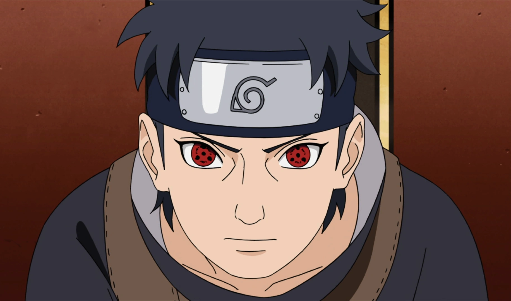
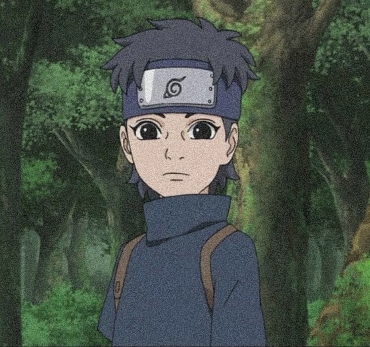
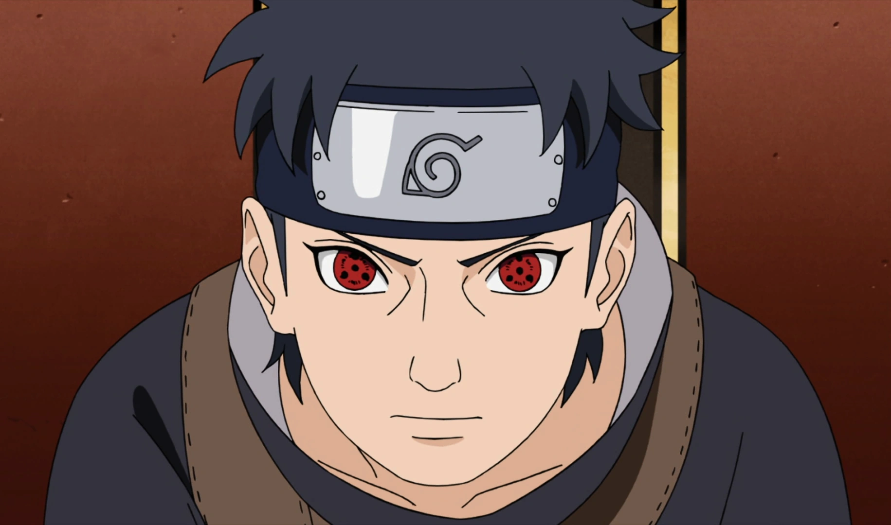
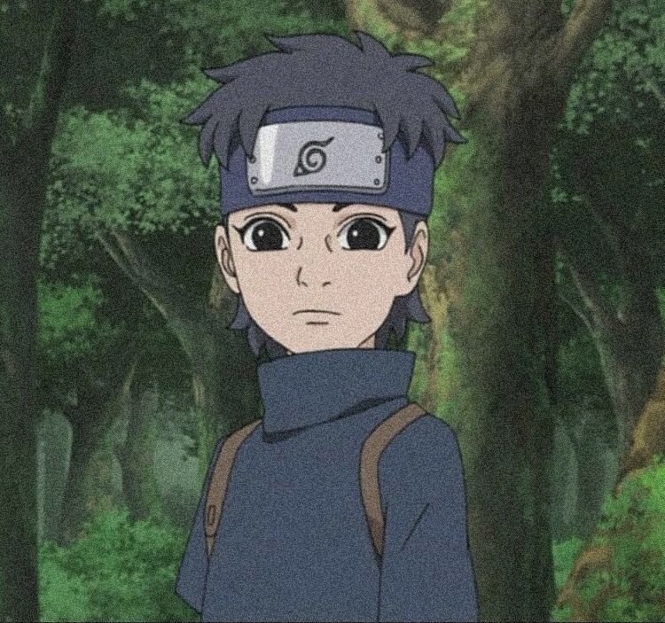
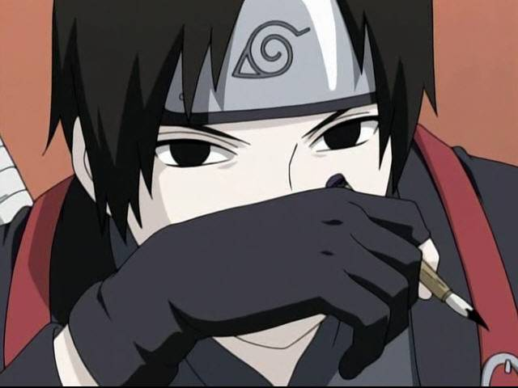

FOC
Fall out Community

 



Qui est ????? Uchiha
????? est un jeune uchiha et ninja du village de Konoha, âgé de 12 ans seulement il mesure 1,56m, dû à sa prédisposition au contrôle du chakra et au connaissance actuel de ?????, il sortira de l'académie à l'âge de 12 ans seulement. Il maîtrise le Katon et le Kiminari. Son entraînement physique se porte essentiellement sur le kenjutsu, le ninjutsu et le maniement des shurikens. Il a une appétence pour le combat et l'art de la diplomatie. Dès son plus jeune âge, ????? n'arrivera pas à se lier avec les autres enfants de son âge car il est assez réservé et mature, il préfèrera la compagnie d'adultes. Fils de Aitsujin Uchiha et de Naori Uchiha, son éducation se fera par Kori Uchiha et les domestiques, elle sera très intellectuel, composé de littérature, d'art et de poésie.

Intellectuel
très intelligent
Curieux
touche à tout
Sens de l'Honneur
infaillible
Calculateur
de naissance

Maniaque
Routine parfaite
Solitaire
Dû à sa maturité


Dès sa naissance, ????? a été très entouré par des adultes tels que des domestiques et Kori Uchiha, il ne côtoyait pas d'autres enfants. ????? s'est révélé être un enfant très intelligent, à 8 mois seulement, il dit son premier mot "Kori", à l'âge de 2 ans il était en capacité de faire des phrases bien construites. C'est à l'âge de 4 ans que ????? aura appris à lire et à écrire. À cet âge-là, ????? Uchiha n'était pas dérangé par la distance entre lui et son père, père et fils se contentaient donc très souvent de simples conversations ou regards. Kori demanda alors un jour : "Ça ne te dérange pas la distance entre toi et ton père ?", ????? lui répondit : "À vrai dire je pense que notre relation est très bonne, on ne se parle pas beaucoup mais on se comprend et je suis persuadé qu'il veille sur moi". ????? préférait donc passer son temps à lire des livres dans son domaine de clan, à apprendre différents arts grâce aux domestiques. Il passait aussi du temps à s'entraîner au maniement de la lame et des shurikens à l'aide des mannequins de bois présents dans la cour du domaine. C'est à l'âge de 5 ans que ????? se découvrit une passion pour la poésie, il apprendra donc tout cet art seul en autodidacte. Au sein de son clan, cette enfance lui vaudra le titre de "l'enfant précoce".
"L'art n'est pas beau par son apparence, le véritable art est beau de sens, ainsi reconnaît-on un artiste."
-????? Uchiha

????? sera un enfant très avancé pour son âge. Grâce à la lecture et à l'entraînement, il perfectionnera sa première technique de Katon à l'âge de 6 ans et la première technique de Kiminari à l'âge de 8 ans. Il aura fini de dévorer tous les livres de l'académie sur la diplomatie et l'art de la guerre dès l'âge de 10 ans. Dès lors, il commencera à réaliser à quel point la diplomatie occupe une place majeure dans le monde shinobi. Il demandera souvent conseil à des gens beaucoup plus âgés afin de mieux comprendre l'histoire de Konoha et la place de son clan dans le village. Bien que l'histoire de son clan lui restera encore un mystère étant trop jeune, le sujet sera souvent évité. Petit à petit, le jeune Uchiha passait de moins en moins de temps avec les domestiques et Kori. Il étudiait en autodidacte dans son coin, toujours assez réservé, à faire de la peinture de temps en temps. ????? se pose beaucoup de questions sur le clan. Néanmoins, il préférera garder certains sujets secrets par peur de blesser la seule famille qu'il a. Il taira les questions qu'il se pose secrètement. Il sait peser le pour et le contre et sait que certains sujets sont sensibles.

"Ce n'est pas parce que je feins l'ignorance, que je ne sais pas"
-????? Uchiha


????? avait désormais 12 ans. Sa sortie de l'académie était très proche et tous le savaient dans le clan Uchiha, notamment la personne qu'il avait le plus côtoyée, Kori. Comme vous le savez déjà, ????? n'avait pas beaucoup d'amis, mais jusqu'à présent, ça ne le dérangeait pas tant qu'il pouvait apprendre et accumuler des connaissances. Par contre, Kori, qui avait été assez proche de ce dernier, remarqua un changement chez elle à l'approche de la sortie de l'académie. Elle n'avait plus la même joie que lorsque ????? était enfant. ????? évitera le sujet et préférera se concentrer seul sur son entraînement. Néanmoins, il fera attention à Kori tout comme elle l'avait fait pour lui. Ce jeune Uchiha allait donc bientôt connaître un nouveau départ dans sa vie de ninja. Il commencera alors à essayer de se renseigner comme il le pouvait sur son clan. Néanmoins, il aura du mal à trouver des réponses, la plupart des livres ne parlant que très peu du clan. Il aura donc juste compris que son clan possédait un dôjutsu et que les Uchihas percevaient les émotions différemment (il n'aura pas connaissance des conditions nécessaires au Sharingan, etc. Ces connaissances sur le clan ne seront que très, très floues au début). Avant sa sortie de l'académie, il lui arrivera de se poser des questions sur son grand-père, mais il gardera cela pour lui. La sortie de l'académie est proche, "C'est pour bientôt, je suis prêt, prêt à devenir un véritable shinobi."

"L'histoire du clan est brouillée, l'info est floue, alors je la fluidifierais pour tous les prochains Uchihas !"
-????? Uchiha
La Famille Uchiha

Il y a fort longtemps, le clan Uchiha avait été démantelé, tous ses membres s'étaient sacrifiés afin de mettre fin à la grande guerre, mais un membre avait survécu.
Étant un des clans les plus puissants qui soient dans le monde Shinobi, le clan Uchiha était craint et respecté, mais derrière cette crainte se cachait très souvent de la jalousie et de la haine.
Le clan uchiha est le clan avec les membres de clan les plus talentueux à l'enfance et souvent parmi les plus puissants à l'âge adulte, le clan Uchiha est principalement associé à deux attraits : leurs affinités naturelles avec le Katon et leurs puissants Dôjutsu, le Sharingan.
Les uchihas souffrent d'une malédiction : la malédiction de la haine, les uchihas sont en générales des personnes très émotives mais qui ont tendance à le cacher, mais la malédiction les frappent lorsqu'ils perdent une chose qu'ils chérissaient,
dès lors le désespoir de cette douloureuse expérience provoquera une manifestation de chakra unique dans le corps d'un uchiha, le chakra fluctuant dans le cerveau impactera les nerfs optiques, créant ainsi le Sharingan.
"Mes yeux sont une malédiction, ceux qui croiseront mon regard seront maudits"
-????? Uchiha

Objectif 1 :
????? Le premier objectif du jeune Uchiha sera de monter les échelons afin de montrer sa valeur et surtout pour qu'on puisse le considérer et lui raconter l'histoire de son clan un jour. Il souhaite retransmettre cette histoire sous forme de poésie et de l'illustrer grâce à la peinture. Cette poésie s'appellera "Les Liens Sanguins". Elle sera entretenue dans le domaine du clan Uchiha, afin que seuls les membres du clan puissent la lire. Lorsqu'ils seront assez matures, ils en comprendront le sens, car celle-ci sera assez abstraite.

Objectif 2 :
Le jeune Uchiha, plus tard, intégrera la branche diplomatique de Konoha, ce qui concorde totalement avec son sang-froid. Encore plus tard, il souhaitera devenir un membre éminent de cette section et augmenter les critères de sélection afin de filtrer tous ceux susceptibles de perdre leur calme. Par ailleurs, il souhaitera au cours de sa vie aider Kori à se hisser au rang de Hokage et à seconder le Hokage.

Objectif 3 :
Plus tard, XXXXX mettra un point d'honneur à récupérer l'héritage de son clan, notamment le Kamui qu'il sera amené à découvrir au cours de sa vie shinobi. Il souhaitera donc maîtriser ces techniques afin de mieux les comprendre. Une fois grandi, une fois ayant maîtrisé l'héritage du clan, il souhaitera retransmettre l'histoire et les techniques de son clan dans une encyclopédie qu'il écrira tout au long de sa vie ninja afin de guider les générations futures, pour qu'elles ne se laissent pas guider par la haine.


Katon

Kiminari

Dôjutsu
Le katon est la nature de chakra phare du clan Uchiha, ????? n'est pas si différent sur ce point-là, il maitrisera le Katon tout comme la plupart de son clan, Il sera capable de créer des murs de feu dès le plus jeune âge.
????? maitrise le Kiminari aussi appelé "foudre noir" est un attribut génétique rare, c'est une forme dérivée et unique du raiton, elle dépasse la vitesse et la force brute du raiton, faisant de ce kekkei genkai une vraie force offensive.
Les membres du clan Uchiha sont généralement décrit par une même chose, leurs dons héréditaires, un des dôjutsus les plus redoutables du monde Shinobi, le sharingan, ????? n'échappe donc pas à la règle, dans son sang coule aussi ce don.

-Taille :
1.56m
-Poids :
54kgs
-Corupulence :
Musculature assez développée
-Cheveux :
court et marron
-Traits :
Traits fins hérités de sa mère

Qualités
- Sérieux
- Autodidacte
- loyal
- Calme
- Honnête
- Intelligent
- Sang-froid
- Créatif

Défauts
- Froid
- Distant
- Solitaire
- Peu sociable
- Peu expressif
- Très pris par son art
je m'appelle Adam, j'ai 19 ans et je suis un immense fan de Naruto.
Il faut se dire que Naruto est un des animes qui a bercé mon enfance, j'ai commencé à regarder Naruto sur la 11 puis sur GameOne et enfin en streaming.
Lorsque j'ai découvert la FOC j'y ai vu une sorte d'alliance entre Mon anime préféré et mon type de jeu préféré, le RP, j'aimerais donc pousser l'expérience encore plus loin avec ce rp clan.
Je pense pouvoir apporter ma petite touche personnelle au sein de ce rp, mais je pense aussi que ce rp clan pourrait m'être tout autant bénéfique pour mon expérience sur le monde du rp.
Au niveau de mes disponibilités, je suis déjà en Vacance et ce jusqu'au mois de Septembre, je suis donc disponible tous les jours (sauf événement exceptionnel), on pourra donc me retrouver sur le serveur de 16h à 3h tous les jours.
Etant un ancien joueur de RP, (commencé sur Habbo Hotel) et étant passé par du rp écrit, il n'y avait pas vraiment de "pvp" auparavant, je suis donc beaucoup plus un joueur Serious RP qui aime créer des scènes et les vivres à fond que de faire du pvp.


Voici Habbo Hotel, les plus anciens reconnaîtront, j'ai commencé les jeux vidéos très tôt et j'ai commencé avec Habbo Hotel, Je ne pourrais pas vous dire combien de temps j'ai passé à faire du rolePlay dessus car je n'étais encore qu'un enfant mais je peux vous assurez que le rp sur ce jeu a bercé mon enfance un long moment.
C'est bien Minecraft, vous ne rêvez pas, je faisais du rp sur minecraft, sur ma ps4, lorsque j'étais adolescent des serveurs minecraft était crées pour rp sur ps4, c'était ma première vrai expérience avec un chat vocal. J'y ai accordé un peu plus de 700 heures.
Je pense que tout le monde reconnaît ce logo, c'est bel et bien celui de FiveM, pas besoin de vous expliquez ce qu'est fiveM, je pense que tout le monde connait assez bien le gtaRP. GTARP c'est très simple, j'y ai joué avec des potes et j'y rejouerais encore et encore dans le futur je pense (Insh'Allah gta6 bientôt). J'ai accordé à ce jeu un peu plus de 2000 heures de jeu.
Et nous voilà sur Gmod, j'avais un ancien compte steam sur lequel je jouais à Gmod lorsque j'étais plus jeune. Malheureusement le compte est perdu mais j'y avais auparavant consacré plus de 1000 heures à noter que 100% de mes heures de jeu d'avant étaient sur le serveur de Garry School GtaCity rp. C'est le Rp le plus Serious de mon expérience dans le monde du rp et j'ai ENORMEMENT apprécié. Sur ce compte Steam la, il n'y a donc que mes heures de jeu sur NarutoRp, à noté que j'ai pu tester 2 slots, un qui est niveau 96 avec le Kiminari et un autre ou j'ai pu testé le Shakuton qui est niveau 60.
Mon premier personnage fut Setsushi Nadeko, il est très vite passé Chunin et a intégré la Chifu, dès qu'il était Genin, il décida de former un groupe de personnes intelligentes et fortes, pour les recrutements un sensei s'en occupait, dès lors un grand groupe de Ame vu le jour, "La brume écarlate".
C'était donc un groupe de 14 personnes qui se réunissait assez souvent au pays neutre pour discuter et surtout, l'objectif de ce groupe était de faire en sorte que les "faibles" soient écoutés à Ame, mais petit à petit l'objectif dériva et l'organisation était devenu un groupe de traque envers les traîtres d'Ame. Setsushi décida de rester Chunin afin de montrer qu'on pouvait être à la tête d'une organisation sans forcément "être fort".
Avec ce personnage je réussissais donc à créer mes propres scènes et à en faire profiter les autres, malheureusement Setsushi, chef de la brume écarlate succomba après être resté chunin 5 semaines (5 ans in game).
Voici mon deuxième personnage, Tetsuya Kando (Kakunin), un jeune nukenin originaire d'Amegakure. C'est un sociopathe manipulateur qui n'a pas hésité à torturer un camarade, empoisonner un orphelin, ou encore tuer une personne qui pensait être son ami. J'enquêtais sur Ichibi avec un groupe de 4 personnes, j'ai donc exploité cette trame afin de créer de nombreuses scènes pour moi-même et d'autres joueurs, notamment en enquêtant sur le pacte qu'avait fait Ame et sur les membres du culte. Je m'étais infiltré au sein des scientifiques de Suna. Je me suis aussi infiltré à Konoha à plusieurs reprises, me faisant passer pour un "commandant genin" ou encore un chunin. Des rapports étaient régulièrement faits à Shinda Nakara (membre du conseil d'Ame), même si les rapports ne dévoilaient pas tout car je manipulais celui-ci aussi. Je suis actuellement en trame dans la forêt interdite (je n'en dis pas plus pour ne pas spoiler).
Pourquoi Moi?
Fort de mes différentes expériences RolePlay, j'ai pu à diverses reprises faire du Serious RP et surtout toujours m'investir au sein des divers rp que j'ai commencés. Même dans la vie en général je m'investis toujours dans ce que j'entreprends, je pense que cette candidature en est la preuve même, elle a été codé de A à Z en 35 heures de travail.
Il va sans dire que ceci n'est qu'un reflet de ma motivation et qu'en jeu, je m'impliquerais encore bien plus que cela dans ce rp clan.
Discord : Tyro2 (Tyro-Sama)
Mes respects,
Adam.
Merci de m'avoir lu !